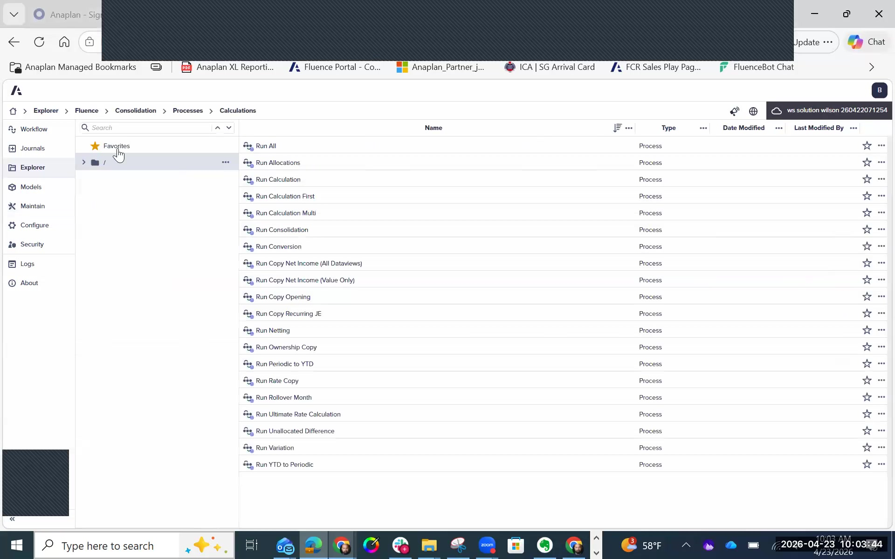

Security
User roles, folder security, model security, workflow security, and SSO
FCR has multiple security layers that interact with each other. Misconfigured security doesn't just block users — it can silently remove features. For example, if Consolidation permissions are not set to "All," the + button in the FX Rate Override form disappears entirely. Always configure and test security in a non-production environment first.
Security Model Overview
FCR security is applied at five distinct layers. Each layer is independent but they combine to define what a user can see and do. A gap in any layer can prevent users from accessing features or data they should have.
FCR Security Module Structure
The Security module in FCR has three main tabs:
- Tab 1 — Users: Lists all users in the FCR environment
- Tab 2 — Roles: Define named roles (e.g., CONSOLIDATION_ADMIN, ENTITY_OWNER, READ_ONLY)
- Tab 3 — Role Authorizations: Assign granular permissions to each role, organized by module
The Role Authorizations tab is the most important configuration screen. Key permission areas:
| Permission Area | What It Controls | Key Setting |
|---|---|---|
| General | Which models/applications the user can access | Assign the consolidation model to every role that needs it |
| Journals | Access to the Journals module and the ability to post journal entries | Enable ALL journal sub-permissions for users who post journals — missing any one will prevent journals from working |
| Consolidation | Data view access and consolidation process permissions, including FX Rate Override entry | Set to "All" to enable the + button in the FX Rate Override form; set to "None" for read-only users |
| Workflow | Which workflow role (Owner / Supervisor / Contributor) is assigned per entity | Match to the user's organizational role; users with no workflow role cannot see the workflow |

Workflow Security — Three Roles
Every FCR workflow uses a three-role security model. These roles are distinct — a user not assigned to any role cannot even see the workflow exists.
| Role | Can Do | Cannot Do | Assign To |
|---|---|---|---|
| Owner | Create workflows, edit task details, run consolidation processes, do everything a Contributor can do | Approve/reject (that's the Supervisor's job) | Implementation team, key finance power users |
| Supervisor | Approve or reject workflow tasks submitted by Contributors | Create, edit, or complete workflow tasks directly | Finance controllers, Group Finance managers |
| Contributor | Access assigned tasks, enter data, set percentage complete, submit for approval | Approve/reject; run consolidation; modify workflow design | Entity finance teams entering local data |
Folder Security
Folder security controls what users can see in FCR's Explorer navigation:
- Right-click any folder in Explorer → select the three-dots (…) menu
- Choose Security
- Assign roles to the folder — set permissions for: viewing contents, adding objects, editing objects
Folder security is particularly important for controlling access to reports, input forms, and processes. A user who cannot see a folder will not know it exists.
SSO / SAML Integration
FCR supports SAML 2 for Single Sign-On integration with customer identity systems (Azure AD, Okta, etc.). Key points:
- SSO is configured at the workspace level — same as any other Anaplan workspace
- FCR users are standard Anaplan users — no separate identity management is needed
- Once SSO is configured, FCR inherits it automatically
- No special FCR-specific SSO configuration is required beyond the workspace setup
Naming Conventions Recommendation
Clear role naming makes ongoing support and maintenance significantly easier. Recommended convention:
CONSOLIDATION_ADMIN— Full access, runs processes, manages configurationENTITY_OWNER— Entity-level workflow owner for specific subsidiary teamsGROUP_CONTROLLER— Supervisor role for group finance review and approvalREAD_ONLY— View-only access, no data entry or process execution- For entity-restricted roles, include the entity hierarchy reference: e.g.,
EMEA_CONTRIBUTOR
| Symptom | Root Cause | Fix |
|---|---|---|
| FX Rate Override + button is missing | Consolidation permission is not set to "All" | Security → Role Authorizations → Consolidation → set to All → Save |
| Journals module not visible in left nav | Journal permissions not fully enabled | Enable ALL journal sub-permissions in Role Authorizations → Save (module reappears) |
| User can't see entity data | Missing Workflow Contributor role assignment for that entity | Role Authorizations → Workflow tab → assign Contributor role to the relevant entity |
| Workflow not visible to user at all | User has no Owner, Supervisor, or Contributor role assigned | Assign at least one workflow role in Role Authorizations |